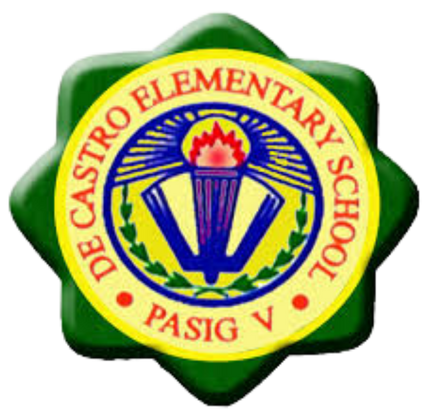
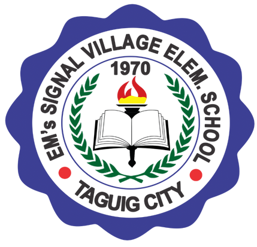
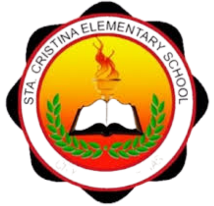
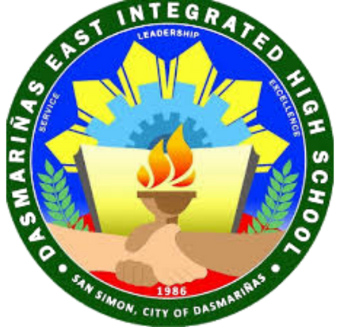
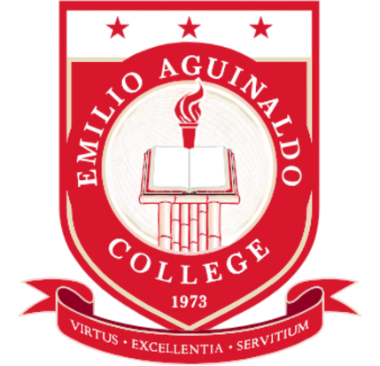

A school is where learning begins, curiosity grows, and futures are built.

De Castro Elementary School
2012 - 2013
De Castro Elementary School is where I began my educational journey. It provided a strong foundation in basic subjects and fostered a love for learning that has stayed with me throughout my academic career. I completed my Grade 1 level in this school, where I learned the fundamentals of reading, writing, and arithmetic. My teachers were kind and patient, always encouraging me to do my best. I also made my first group of friends who made learning more enjoyable. The lessons and experiences I gained there helped build my confidence and curiosity.

Em's Signal Village Elementary School
2013 - 2014
Em's Signal Village Elementary School was my second school, where I continued to build on the skills I learned in my first year. The supportive environment and dedicated teachers helped me grow academically and socially. I studied here from Grade 2 to Grade 4 after my family moved to Taguig. Adjusting to a new school was a bit challenging at first, but everyone was welcoming and friendly. I learned to be more independent and responsible during these years. My experiences in this school taught me the value of adaptability and perseverance.

Sta. Cristina Elementary School
2015 - 2016
Sta. Cristina Elementary School is where I completed my elementary education, finishing Grade 5 and Grade 6. The school provided a nurturing environment that encouraged both academic excellence and personal growth. I moved to Cavite in May 2015, and this school became my new home for learning. The teachers were very supportive, helping me adjust to the new curriculum and environment. I participated in various extracurricular activities, which helped me develop teamwork and leadership skills.

Dasmarinas East Integrated High School
2016 - 2022
Dasmarinas East Integrated High School is where I pursued my high school education, from Grade 7 to Grade 10. This school played a significant role in shaping my academic and personal development. The diverse curriculum and various clubs and organizations allowed me to explore my interests and talents. I made many friends who supported me throughout my high school journey. The experiences and lessons learned here have prepared me well for higher education and future challenges.

Emilio Aguinaldo College - Cavite
2022 - 2024
Emilio Aguinaldo College - Cavite is where I began my senior high school education, specializing in the STEM strand. The school provided a rigorous academic environment that challenged me to excel in science, technology, engineering, and mathematics. I chose to study here at EAC-C because it has always been my dream school, and it is also where some of my friends decided to enroll, making the experience even more enjoyable and motivating.
Technological University of the Philippines
2024 - 2028
Technological University of the Philippines is where I am currently pursuing my higher education in Bachelor of Technical-Vocational Teacher Education major in Computer Programming. TUP-Cavite is known for its strong emphasis on technology and engineering, making it an ideal place for me to develop my skills and knowledge in computer programming. The university's commitment to excellence and innovation aligns with my career goals, and I am excited about the opportunities and experiences that lie ahead during my time here.